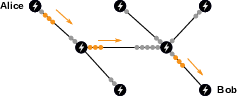

14 Scaling Up
Scalability, a direct borrowing from the English term “scalability,” also known as extensibility, refers to a system’s capacity to scale up—that is, to continue functioning equivalently as the number of users increases. In a centrally managed system, this capability is ensured by adding computing hardware, either by increasing the computational power of the existing infrastructure (vertical scaling) or by multiplying instances of the infrastructure to share request processing (horizontal scaling). Consequently, scalability depends on the forecasting level of the entity managing the system.
In the case of a distributed system, which behaves differently, scalability refers to something more complex. Adding hardware is not sufficient; the system’s properties must also remain consistent as activity increases. In Bitcoin’s case, this problem is particularly difficult because any increase in load permanently affects the network nodes due to the need to share the entire blockchain. Essentially, the system does not scale—or scales very little.
This scalability issue in Bitcoin has been a major concern within the community, to the point of provoking an open conflict between 2015 and 2017: the infamous block wars described in Chapter 2. Some believed that increasing the block size would suffice to handle demand without altering supply, while others imagined that overlay solutions like the Lightning Network would be effective enough to process all transfers. This chapter aims to provide an overview of the situation and propose a third way.
The System’s Lack of Scalability
Bitcoin’s original design is based on a simple principle: obtaining and verifying all transactions to ensure there is no double spending. As Satoshi Nakamoto wrote in the white paper, “the only way to confirm the absence of a transaction is to be aware of all transactions1.” Therefore, to achieve maximum security, each node must, in principle, maintain a complete version of the blockchain.
1 Satoshi Nakamoto, Bitcoin: A Peer-to-Peer Electronic Cash System, October 31, 2008.
From the outset, this particular functioning naturally raised the question of the system’s scalability. When Satoshi Nakamoto presented his discovery on the Metzdowd.com cryptography mailing list on October 31, 2008, the first response he received addressed this problem. This response came from former cypherpunk James A. Donald on November 2, who wrote:
“We very, very much need such a system, but as I understand your proposal, it does not seem to scale to the required size.
For transferable proof of work tokens to have value, they must have monetary value. To have monetary value, they must be transferred within a very large network—as, for example, a file sharing network like Bittorrent.
To detect and reject a double-spending event in a timely manner, one must have most past transactions of the coins involved in the transaction, which, if implemented naively, requires each peer to have most past transactions, or most past transactions that have recently occurred. If hundreds of millions of people are doing transactions, that is a lot of bandwidth—each must know all transactions or a substantial fraction thereof2.”
2 James A. Donald, Re: Bitcoin P2P e-cash paper, November 2, 2008, 23:46:23 UTC: https://www.metzdowd.com/pipermail/cryptography/2008-November/014814.html.
By this, James A. Donald highlighted Bitcoin’s lack of scalability. For any given system, an increase in transaction volume raises the number of transactions to obtain and process. This increase makes operating a node more difficult, potentially affecting the network’s decentralization and, consequently, security. Therefore, there is always a trade-off between the system’s utility and its security—or, more precisely, between ease of transaction and ease of verification.
This trade-off generally manifests as a limit on transaction capacity, described by the consensus rules (explicit limit) or, more rarely, by network rules (implicit limit). The transaction capacity limit was originally defined as a maximum block size, prohibiting miners from creating blocks larger than a certain size. In the prototype, this size was implicitly defined by the maximum size of protocol transmission messages, that is, 32 MB. Then, an explicit limit of 1 megabyte (1 MB) was added by Satoshi Nakamoto in September 2010 through the constant MAX_BLOCK_SIZE, without any public announcement from him, to prevent denial-of-service attacks. This size corresponded, for a network running at full capacity, to a theoretical volume of 4.5 standard transactions per second, which in practice amounted to about 3 transactions per second.
With the integration of SegWit into the main version of Bitcoin in August 2017, this limitation became a weight limit of blocks. This new metric gave greater importance to the base size compared to the witness size in the calculation of the block’s measure, also modifying how miners counted to add transactions to the block. This change was an effective increase in the protocol’s transaction capacity, raising the allowed transaction volume to 8 transactions per second theoretically, and to 4.5 transactions per second in practice.
The existence of a transaction capacity limit inevitably creates scarcity of block space. If it is fixed, it makes the supply inherently inelastic. Thus, strong demand for block space leads, through an auction effect, to an increase in the price for inclusion—that is, transaction fees. The fee market is stimulated by this rigid limit instead of remaining at its natural level, namely the default inclusion cost for miners.
Through its effect on fee levels, the limit creates a utility floor—that is, a value level below which transfer and holding are not considered profitable by users. Indeed, miners are led to reject transactions that do not pay a sufficient fee rate relative to their size. Consequently, the utility of a transaction may be deemed insufficient by its author concerning the average fee level of the chain, in which case it does not occur. If someone wants to buy a coffee for $2 in BTC but the usual fees are $1, they will quickly move on. Generally, use cases requiring “low” fees are driven off the chain, as in the case of the gambling service SatoshiDICE, which had to cease its activities on BTC in 2017 following the increase in fees.
The transaction capacity limit has the virtue of ensuring that the cost of operating a node remains low. It thus impacts the network’s potential decentralization. Indeed, unlike mining hardware, the cost related to verification is not offset by a proportional income, so it affects everyone equally. The least equipped node operators cannot keep up, which can affect the network’s ability to decentralize effectively.
The influence on potential decentralization affects both mining and commerce by preventing smaller actors from engaging in these activities at their scale. The centralization of mining increases the risk of censorship, while the centralization of commerce raises the risk of protocol alteration, and thus inflation risk. This is why the transaction capacity limit plays a major role in the security model: the lower this limit, the greater the system’s potential security.
The transaction capacity limit is subjectively determined by merchants, based on their perception of the threat and their personal use of the chain. There is no ideal block size limit; there are only human beings calculating risk relative to a potential reward. One might attempt to establish an average to estimate a limit corresponding to a given usage, but such an estimate would be at best imperfect.
Through its effect on decentralization, the limit creates a utility ceiling—that is, a value level above which transfer and holding are considered too risky for the system’s effective security. Indeed, since no security is absolute, transferring and holding a certain value may no longer sufficiently benefit from the network’s protection. For example, receiving or storing the equivalent of several million dollars on the Bitcoin SV chain is, to say the least, imprudent.
The utility floor (induced by the limit’s negative impact on block space) and the utility ceiling (induced by the limit’s positive impact on security) have the effect of bounding a range of values outside which transfer and holding are no longer relevant3. It is the existence of this range of values that leads to the emergence of substitutes for a given system.
3 See Eric Voskuil, “Utility Threshold Property,” in Cryptoeconomics: Fundamental Principles of Bitcoin, Amazon KDP, 2022, pp. 317–318.
The arrival of new users and the subsequent increase in demand for block space raise the utility floor. Any scaling up of the system modifies its characteristics. Therefore, any Bitcoin system is essentially non-scalable, in the primary sense of the term. However, there are methods to circumvent this lack of scalability.
Improving Base Efficiency
The first proposal regarding scaling up was to gradually increase the block size limit to accompany the rise in activity4. This was the solution supported by Satoshi Nakamoto, as evidenced by his first reaction to James A. Donald’s response on November 3, 2008:
4 Among the alternative versions of Bitcoin, the path of progressively increasing the block size limit was chosen by Bitcoin Cash, which plans to integrate an algorithm to manage this increase automatically. See bitcoincashautist, CHIP-2023-04: Adaptive Blocksize Limit Algorithm for Bitcoin Cash, September 2, 2023: https://gitlab.com/0353F40E/ebaa/-/blob/f4edacd134103a7e232740463a5f26379bf90f18/README.md.
5 Satoshi Nakamoto, Re: Bitcoin P2P e-cash paper, November 3, 2008, 01:37:43 UTC: https://www.metzdowd.com/pipermail/cryptography/2008-November/014815.html.
“Bandwidth might not be as prohibitive as you think. A typical transaction is about 400 bytes (ECC is nice and compact). Transactions need to be broadcast twice, so let’s say 1 KB per transaction. Visa processed 37 billion transactions in FY2008, so that’s 100 million transactions per day. That many transactions would take 100 GB of bandwidth, or the size of 12 DVDs or about 2 HD quality movies, or about $18 worth of bandwidth at current prices. If the network were to get that big, it would take several years, and by then, sending two HD movies over the Internet probably won’t seem like a big deal5.”
However, Satoshi’s vision was far too optimistic. On one hand, he did not see mining centralization as an existential problem, predicting from the start that the network’s computing power would rely on “server farms with specialized hardware.” On the other hand, he thought that Simplified Payment Verification (SPV) would suffice, not accounting for its unreliability and lack of confidentiality, nor its inability to exert power over determining consensus rules. Satoshi’s plan was therefore fallible, though not entirely misguided.
Operating a node depends on a number of burdens. The main ones are hard disk storage (HDD) for the history (blockchain), flash memory storage (SSD) for the state (UTXO set), random access memory (RAM) storage for the unconfirmed transaction pool (mempool) and orphan block pool, maintaining bandwidth (usually expressed in Mbps) sufficient to receive and send blocks and transactions, and CPU computation for data verification, notably signatures. Reducing the cost of running a node thus involves reducing one of these burdens.
Even if naive increases to the block size limit are not in themselves a scalability method, they can be offset by technical progress from software, hardware, or algorithmic optimization. Firstly, software performance (for a given set of consensus rules) can be improved, and this is indeed one of the basic tasks of the Bitcoin Core team6. Secondly, computer hardware can be made more efficient, with certain components gradually becoming less expensive (Moore’s Law7). Thirdly, the protocol itself can be improved at the algorithmic level, through the discovery and adoption of new, more efficient techniques: for example, the Schnorr signature algorithm produces more compact signatures than ECDSA (40 bytes instead of 72), or bulletproofs make the range proofs of Confidential Transactions much less voluminous.
6 See, for example, Jameson Lopp’s article on Bitcoin Core performance evolution, in which he describes how the first synchronization on his machine has improved over the years. — Jameson Lopp, Bitcoin Core Performance Evolution, March 5, 2022: https://blog.lopp.net/bitcoin-core-performance-evolution/.
7 Moore’s Law is a conjecture stated by Gordon E. Moore in 1965, which posited that the complexity of semiconductors doubled every year. This law was cited by Satoshi Nakamoto in the white paper, who wrote: “Moore’s Law predicts current growth of 1.2 GB per year, so storage should not be a problem even if the block headers must be kept in memory.” — Satoshi Nakamoto, Bitcoin: A Peer-to-Peer Electronic Cash System, October 31, 2008.
Beyond these optimizations, there is no way to increase the transaction volume of the chain without compromising the Bitcoin model. The solution is to modify the system’s behavior in such a way that it does not overly affect the security model. Several factors can thus be optimized, including the size of the chain to keep, the Initial Block Download (IBD), and the size of the UTXO set.
First, one can choose to delete the oldest blocks once they have been verified. One simply keeps the chain of headers, the network state, and the most recent blocks to be able to rejoin consensus in the event of a deep reorganization. This method is called pruning.
But this method does not alleviate the burden of the IBD, that is, the process of downloading and verifying the blockchain up to its current height. To address this, various more or less risky techniques can be employed. The first is signature validity assumption, based on the assumevalid parameter, introduced in Bitcoin Core in 20178, which involves skipping signature verification up to a given block hash, saving a lot of time during initial synchronization. This method is not a checkpoint (it does not require the block to exist), and the risk it poses is minimal. The second technique is AssumeUTXO, proposed in 2019 by James O’Beirne and still in development9, which involves assuming valid a given UTXO set (identified by its hash) at a determined block height: the node operator downloads the UTXO snapshot from a third party and begins initial synchronization from there, deferring (or entirely ignoring) the download and verification of previous blocks. This method presents a verification defect (at least temporarily), exposing the operator to deception, but the risk is considered acceptable. There is also a third, more radical technique: UTXO commitments, which is a soft fork requiring miners to add the UTXO set hash to the block10; this commitment would allow a much more reliable source for downloading the snapshot from which to begin synchronization.
8 Bitcoin Core, Bitcoin Core 0.14.0, March 8, 2017: https://bitcoincore.org/en/2017/03/08/release-0.14.0/#assumed-valid-blocks.
9 James O’Beirne, AssumeUTXO Proposal, April 24, 2019: https://github.com/jamesob/assumeutxo-docs/tree/2019-04-proposal/proposal.
10 Mark Friedenbach, [soft fork] Block v3: miner commitments with compact proofs, March 28, 2014: https://github.com/bitcoin/bitcoin/pull/3977; Pieter Wuille, [bitcoin-dev] Rolling UTXO set hashes, May 15, 2017, 20:01:14 UTC: https://lists.linuxfoundation.org/pipermail/bitcoin-dev/2017-May/014337.html.
11 Cory Fields, UHS: Full-node security without maintaining a full UTXO set, May 16, 2018, 16:36:35 UTC: https://lists.linuxfoundation.org/pipermail/bitcoin-dev/2018-May/015967.html.
12 Thaddeus Dryja, Utreexo: A dynamic hash-based accumulator optimized for the Bitcoin UTXO set, June 6, 2019: https://eprint.iacr.org/2019/611.pdf.
Then, beyond the IBD, there remains the problem of the UTXO set size, which is one of the most important limiting factors. The first idea to reduce this size is a proposal by Cory Fields called UHS (for UTXO Hash Set), which involves storing only the hashes of individual UTXOs11. The second idea is to use cryptographic accumulators, as Thaddeus Dryja did with his proposal named Utreexo, which involves grouping UTXOs into Merkle trees to condense the set to keep in memory, at the cost of a trade-off on bandwidth12.
Finally, one can choose to split mining and transaction verification by separating the system’s history and state into several fragments, each supported by a (variable) part of the network. This is called sharding. This was the idea behind using a Merkle-Patricia prefix tree (also called a Merklix tree) vaguely considered by Bitcoin Cash developers, or danksharding, which could be implemented in Ethereum. However, this is a significant modification of the protocol that may never be implemented in a version of Bitcoin.
These proposals are compromises made at the chain level, often affecting the system in its entirety. However, it is also possible to make a different compromise at the level of individual coins, by using banks and, especially, overlays.
Banks and Overlays
Other proposals generally cited as alternatives to increasing block size are solutions that avoid making all transfers on-chain by offloading smaller ones elsewhere, these being “bundled” into larger transactions. The chain is then used to settle debts, contracted analogically (legal contract) or digitally (smart contract). This involves considering the protocol as a settlement protocol.
The first way to do this is to reintroduce trust into the system by contracting obligations traditionally, with what we will call here banks. These banks can issue representative money by holding all the funds or offer credit by keeping only fractional reserves. Using the chain serves for settlement between banks, ensuring the transfer of funds between their clients. This is essentially the model of free banking promoted by George Selgin and Larry White in the 1990s.
This first conception was defended by Hal Finney, who was aware of Selgin and White’s work, as we saw in Chapter 6. On December 30, 2010, he thus praised a free banking model based on Bitcoin:
“In fact, there is a very good reason why Bitcoin-based banks will exist and issue their own digital currency, convertible to bitcoin. Bitcoin itself cannot scale to have every financial transaction in the world be broadcast to everyone and included in the blockchain. There needs to be a secondary level of payment systems which is lighter weight and more efficient. […] Bitcoin-based banks will solve these problems. They can work like banks did before nationalization of money. Different banks can have differing policies, some more aggressive, some more conservative. […] I believe this will be the ultimate fate of bitcoin, to be the ‘high-powered money’ that serves as a reserve currency for banks that issue their own digital cash. Most bitcoin transactions will occur between banks to settle net transfers. Bitcoin transactions by private individuals will be as rare as… well, as Bitcoin-based purchases are today13.”
13 Hal Finney, Re: Bitcoin Bank, December 30, 2010, 01:38:40 UTC,https://bitcointalk.org/index.php?topic=2500.msg34211#msg34211.
14 “Bitcoin can be seen as a new and emerging system of reserve currency for online transactions, in which online banks will issue tokens backed by bitcoin for their users, while keeping their reserves in bitcoins in offline storage. Every individual will be able to audit the intermediary’s holdings in real time, and systems of verification and reputation will ensure that no inflation occurs.” — Saifedean Ammous, The Bitcoin Standard, Wiley Publishing, 2018, p. 206.
This vision was echoed in 2018 by Saifedean Ammous in his book, The Bitcoin Standard, in which he argued that bitcoin’s primary role was to be a reserve currency14. This thesis was later developed by others like Nik Bhatia.
In reality, this way of diverting chain activity has materialized with exchanges, which allowed handling the numerous buy and sell orders related to speculation. It has also manifested through casino platforms that grouped operations related to gambling. Finally, it has been implemented by custodial services like Grayscale, which offered financial institutions the possibility of including bitcoin on their balance sheets.
However, this is not a scaling solution for Bitcoin. Bank processing is not censorship-resistant, nor inflation-resistant, and its generalization would ultimately lead to the total destruction of Bitcoin’s value proposition. Thus, one can reasonably assume that such a solution can only work on a small scale, for modest amounts, insofar as the state will not intervene, as in the case of Bitcoin Beach in El Salvador.
The second variant of this solution is to proceed not through legal contracts relying on trust but through smart contracts, aiming to manage transfers off-chain. The idea is to minimize trust to make the process viable. This was, for example, the approach behind fidelity bonds, proposed by Peter Todd in 2013, whose goal was to reduce the influence of third parties while preserving clients’ financial privacy and allowing efficient auditing of banks15.
15 Peter Todd, Fidelity-bonded banks: decentralized, auditable, private, off-chain payments, February 23, 2023, 17:49:34 UTC: https://bitcointalk.org/index.php?topic=146307.msg1553349#msg1553349.
This approach has popularized what is generally called layering, which involves offloading financial activity to open and decentralized protocols, partially preserving the chain’s properties. The idea is to condense a multitude of transfers into a small number of transactions performed on the base layer, that is, the blockchain. This terminology comes from the decomposition into layers of the Internet protocol suite, which is organized into multiple dependent layers, like TCP relying on IP.
In layering, the security compromise is partial (only certain bitcoins are concerned) and time-limited (these bitcoins can be recovered on-chain), as opposed to the transaction capacity increase case where it is total and persistent. It is a method consistent with the two-layer model that Nick Szabo envisioned for bit gold, with a base layer whose role was to guarantee the unforgeable scarcity of money, and an upper layer that allowed effective payments.
There is thus a diversity of proposals enabling this layering by making a more or less significant compromise. The main ones are sidechains, the Lightning Network, and Fedimint, which we will discuss in detail later. There are also other proposals like physical object exchange (OpenDime), the Rumple protocol, statechains, ZK-rollups, or the Ark protocol.
Sidechains
Sidechains are secondary blockchains operating parallel to another blockchain known as the “main” chain. They were formalized in October 2014 by Blockstream developers16. This technical solution provides additional processing capacity and higher extensibility, at the price of a slightly diminished local security. In 2014, Blockstream envisioned building an entire ecosystem of sidechains to accomplish tasks impossible on the main chain, such as issuing native assets, deploying advanced smart contracts, or managing domain names.
16 Adam Back, Matt Corallo, Luke Dashjr, Mark Friedenbach, Gregory Maxwell, Andrew Miller, Andrew Poelstra, Jorge Timón, Pieter Wuille, Enabling Blockchain Innovations with Pegged Sidechains, October 22, 2014: https://blockstream.com/sidechains.pdf.
A sidechain is a parallel blockchain that allows transferring funds from one chain to another without compromising the integrity of the moved funds. This generally involves a two-way peg allowing bitcoins to be transferred between chains without loss of value, as shown in Figure 14.1. In one direction, bitcoins are locked on the main chain and their equivalent is created on the sidechain; in the other, bitcoins are destroyed on the sidechain and their equivalent is unlocked on the main chain.
Two aspects differentiate a sidechain’s security model from that of the main chain: maintaining the two-way peg and the consensus mechanism. The first involves deciding who can unlock funds during a transfer from the sidechain to the main chain. Indeed, since the sidechain is intended as a complement (not an extension), the main chain’s nodes are unaware of this sidechain. Consequently, withdrawal is subject to some trust, usually placed in a federation of participants who distrust one another.

The second aspect concerns transaction confirmation on the sidechain, where options are more varied. The consensus can rely on merged mining, in which case the main chain’s work is used. It can be based on proof-of-stake, involving the main chain’s unit. Or it can use a federation agreeing through a classical BFT algorithm, in which case membership in this federation matters (proof-of-authority).
This vision materialized with the launch on BTC of two distinct sidechains in 2018. The first was RSK (also called Rootstock), launched by Sergio Lerner in January that year, focused on running a Turing-complete virtual machine close to Ethereum’s. The second was Liquid, the implementation of the Elements model developed by Blockstream, whose primary goal was to facilitate transactions between various financial actors in the sector, including exchanges. In Liquid, security relies on a federation of functionaries performing both roles: they maintain the L-BTC peg as watchmen and participate in the chain’s consensus as block signers. RSK combines merged mining and a federation of “notaries” to ensure both the anchoring of RBTC and transaction processing.
However, the two sidechains have not managed to attract significant activity over the years due to associated risks. Indeed, using these chains still requires a form of trust that, although minimized, remains present. An unfortunate example of a sidechain gone wrong is the SmartBCH sidechain of Bitcoin Cash, where the company managing the largest bridge between the two chains, CoinFLEX, went bankrupt and could not reimburse users.
To address these drawbacks and reduce the involved trust, a more advanced protocol was developed by researcher Paul Sztorc since November 2015: Drivechain17. As its name suggests (drive chain meaning transmission chain), it is a true machine for creating and managing sidechains.
17 Paul Sztorc, Drivechain - The Simple Two Way Peg, November 24, 2015: https://www.truthcoin.info/blog/drivechain/.
Drivechain’s main feature is that the two-way peg is entrusted to miners, through hashrate escrow defined in BIP-300. During each six-month period (26,300 blocks), miners vote for the sidechain withdrawal transaction distributing funds to users who requested it. The transparency and slowness of these transactions allow all main chain merchants to audit them. Regular, faster transfers are made via atomic swaps or centralized services.
Transaction validation on a sidechain using Drivechain can be ensured by any consensus algorithm. But the most natural is to use merged mining. That’s why the Drivechain project also includes the proposal for “blind” merged mining (BIP-301), a technique allowing main chain miners to automatically delegate sidechain validation to others in exchange for remuneration. The validator earns the difference between the sidechain’s revenue and the purchase of the “right to find a block.” This has the effect of not obliging miners to manage sidechains while still receiving part of their revenue.
Drivechain is a clever concept that would fully realize Blockstream’s 2014 vision. However, it has a major drawback: the security model of its two-way peg. It relies on the potential recourse to a soft fork carried out by merchants to correct a fraudulent withdrawal transaction, which could, for example, be the doing of malicious miners seeking to steal the escrowed funds. It thus depends on merchants’ propensity to monitor the sidechain’s activity on one hand, and to proceed with a protocol modification to freeze the incriminated transaction on the other. This is why the proposal is, even today in 2023, hotly disputed.
The Lightning Network
The Lightning Network is a concept of a network of bidirectional payment channels. It was first presented on February 23, 2015, by Joseph Poon and Thaddeus Dryja during a Bitcoin developers’ seminar in San Francisco18. At the time, competing proposals based on similar ideas existed, such as Amiko Pay (conceptualized by Corné Plooy), Impulse (developed by Jeff Garzik for Bitpay), and Ström (imagined by the startup Strawpay), but Lightning quickly became dominant. In 2023, it was the favored solution by BTC users to perform more transfers, so much so that the acronym LNP/BP emerged to designate all protocols involved in layering (akin to TCP/IP for the Internet).
18 Taariq Lewis, SF Bitcoin Devs Seminar: Scaling Bitcoin to Billions of Transactions Per Day, March 5, 2015: https://www.youtube.com/watch?v=8zVzw912wPo.
The Lightning Network infrastructure relies on payment channels opened and closed between participants. A payment channel is, as described in Chapter 13, a set of smart contracts that allows two people to make repeated payments safely and instantly from previously locked liquidity. The use of a channel is therefore limited by its capacity, that is, the sum of both actors’ balances.
The principle of the Lightning Network is to route payments through these channels via HTLCs, which are more complex commitment contracts allowing the involved channels to be updated19. A payment transits over the network with minimal fees that go to the nodes relaying it. The Lightning Network is thus akin to an abacus, where the rods are channels and the beads are satoshis moving from one side to the other of the channels, as shown in Figure 14.2.
19 In practice, these HTLCs are often also used to update the channels directly, to simplify implementation and improve privacy. — See Andreas M. Antonopoulos, Olaoluwa Osuntokun, René Pickhardt, “Routing on a Network of Payment Channels,” in Mastering the Lightning Network: A Second Layer Blockchain Protocol for Instant Bitcoin Payments, O’Reilly Media, 2022, pp. 185–207.

This functioning offers the possibility of making almost instantaneous and cheap payments. It allows more bitcoin transfers without making more transactions on-chain and without explicitly delegating fund management to a third party. Moreover, the model retains all of Bitcoin’s programmability and opens up possibilities for monetary use on the Internet.
However, Lightning’s benefits should be tempered because it is not without flaws. First, it inherits drawbacks related to the payment channel model where, in the case of the Poon-Dryja protocol, an error can lead to loss of funds. Then, constraints related to capacity and routing necessarily create a tendency toward centralization, notably through the emergence of so-called Lightning Service Providers, which could lead to censorship. Furthermore, contrary to popular belief, privacy on Lightning is weak, as payments are made between identified public keys and transit through intermediaries. Finally, the network is subject to the fee level on the main chain, necessary for contract settlement, which limits the additional transaction capacity provided.
The Lightning Network is therefore suitable for handling everyday payments and micropayments that do not necessarily require the confidentiality and censorship resistance offered by the blockchain, using well-funded channels that are regularly replenished. It was implemented from January 2018, mainly as an overlay on BTC, and has grown considerably since, both technically and economically. Three software implementations were maintained by three different entities (lnd by Lightning Labs, c-lightning by Blockstream, eclair by ACINQ), and a system of technical standards (called Bases of Lightning Technology or BOLT) eventually emerged. Economically, the network met with some success by attracting capital, and in November 2023, a total capacity of 5,400 BTC, equivalent to about 200 million dollars, was reserved to provide liquidity for payments.
Fedimint Chaumian Banks
Another proposal is Fedimint20, a protocol for custody and confidential exchange of bitcoins in a community context. Technically, it involves entrusting bitcoin custody to a federation and exchanging Chaumian tokens (eCash) issued by that federation. This functioning explains the protocol’s name, which is an approximate abbreviation of Federated Chaumian Mint.
20 The functioning of Fedimint is described in the documentation on the website: https://fedimint.org/docs/intro.
Fedimint was envisioned by cypherpunk Eric Sirion during 2021 and implemented in minimal form under the name MiniMint. Sirion was doubly inspired by attempts to apply eCash as a Bitcoin overlay like SCRIT and by community approaches such as Bitcoin Beach in El Salvador. The first transaction of a Fedimint federation took place on September 28, 2022, during the Hackers Congress at Paralelni Polis.
The first component of Fedimint is the Chaumian bank managed by the federation. It uses David Chaum’s blind signature process to issue certificates backed by a certain amount of satoshis, which can be redeemed at any time on-chain or on the Lightning Network. This component provides partial financial privacy to participants: the bank is unaware of exchanges made by clients, but its role in preventing double-spending requires it to see merchants’ revenues21.
21 The technical functioning of Chaumian systems was described in the section “eCash: Chaumian Cash” of Chapter 6.
The idea of using eCash as a Bitcoin overlay is not new. It was proposed and implemented for the first time on August 17, 2010, by an individual operating under the pseudonym fellowtraveller on the Bitcoin forum in the form of his project Open Transactions. The project never took hold, as the need was not felt and the system was probably too complex. However, the idea timidly resurfaced during the scalability debate with the proposal of “bearer blind certificates” by Theymos (administrator of the r/Bitcoin subreddit and the Bitcointalk forum) in December 2016. It was also taken up in 2019 by Frank Braun and Jonathan Logan (co-hosts of the Cypherpunk Bitstream podcast) through SCRIT, a federated Chaumian system project whose name is the acronym for Secure, Confidential, Reliable, Instant Transactions. The latest project to implement a centralized Chaumian system is Cashu, a protocol developed in 2022 by developer callebtc, allowing the creation and exchange of bitcoin certificates on top of Lightning and new tokens.
Fedimint’s interest, just like its predecessor SCRIT, is to decentralize bitcoin custody. To do this, it combines the Chaumian system with a so-called “community” approach, consisting of deploying a bank managed by trusted members of a local community.
This approach was illustrated by the Bitcoin Beach experiment, a sustainable economic development project around El Zonte beach in El Salvador. A community bank emerged in 2020 and has since allowed locals to exchange bitcoins safely and reliably, via the Bitcoin Beach Wallet (now Blink) developed by Galoy. This experience inspired the adoption of legal tender at the national level in September 2021.
The second component of Fedimint is therefore a federation, similar to the federations of sidechains like Liquid or RSK, but composed of trusted individuals with the technical capabilities necessary to operate a node. These federation members, called guardians, are responsible for setting up the infrastructure and are in charge of storing users’ funds and ensuring the proper functioning of the Chaumian bank. They coordinate using a classical consensus algorithm (called HBBFT), which, like all such algorithms, requires at least 66% honest actors to function.
Using this federation represents an obvious technical compromise between full ownership of funds and their delegation to a single actor. This compromise brings major advantages in terms of transaction processing fees and ease of use but also entails significant risks. These are custody risk (the federation can steal or lose funds), fraudulent issuance risk (it can issue more certificates than it has bitcoins), censorship risk (it can refuse to validate a transaction), and regulatory risk (the federation can be seized and shut down by state decision).
All this means that Fedimint cannot be conceived as a scalability solution but as a proposal to replace custodial applications. Fedimint’s goal is to improve bitcoin custody by decentralizing it and increasing the confidentiality of internal exchanges. Its local character should allow it to escape financial regulations and thus avoid the fate reserved for traditional banks.
Scaling Through Substitution
Layering is a correct way to increase the economic volume related to a given chain without overly affecting its primary characteristics. Nevertheless, this approach also has limits: not only do the various overlays have their own flaws, but they ultimately rely on settlements made on the blockchain, whose capacity is limited. Consequently, the utility floor is not eliminated by layering, and thus it cannot be seen as a miraculous way to handle an infinite number of transactions.
The range of values served by a given cryptomonetary system results in demand for substitution systems better able to handle transfers outside this range. A system with a high fee level leaves the way open for using a less secure but cheaper system, allowing the processing of smaller transactions. Conversely, a system with low security level favors the emergence of a more expensive but also more secure system, enabling larger transfers. Therefore, there is a certain complementarity between the different implementations of Bitcoin that allow managing all transaction activity emanating from users22.
22 Eric Voskuil, “Substitution Principle,” in Cryptoeconomics: Fundamental Principles of Bitcoin, Amazon KDP, 2022, pp. 315–316.
Throughout history, such complementarity has manifested through the use of several precious metals as monetary base. Gold could not cover all value ranges: it was suitable for transferring large sums, for which it was selected as the world’s reserve currency, but not for exchanging small change. To fulfill this latter complementary role, silver, and other less precious metals like copper, were used. Silver, a word still used today in French as a synonym for money, was the currency of everyday life, while gold was mainly used for more expensive settlements.
This bimetallic (or even trimetallic) aspect of money persisted for centuries, from the High Antiquity to the 19th century. It was recognized by public authorities who defined their currency as a weight in gold or silver, and minted gold and silver coins by decreeing an exchange rate according to the gold-silver market ratio. Moreover, we observe that this gold-silver ratio was relatively stable throughout history, varying between 10 and 18, confirming silver’s monetary role alongside gold.
However, with the emergence of the gold standard and the disappearance of bimetallism at the end of the 19th century, silver gradually lost its monetary role to be replaced by paper money, initially backed by gold, much more convenient for exchanges. The ratio consequently increased from 15.5 in 1870 to 80 today, corresponding to a loss of silver’s value of over 80% relative to gold.
The analogy with precious metals is enlightening. Since the main version of Bitcoin (BTC) is not suitable for processing smaller value transfers, it follows that these potential transfers are carried out using a substitute currency (cryptocurrency, fiat cash, credit moved by permissive banking services, etc.) or are not processed at all. Litecoin, whose main narrative is that it would be digital silver just as Bitcoin is digital gold, perfectly meets this demand. It was thus presented from its launch as a “lighter version of Bitcoin” aiming to be “to silver what Bitcoin is to gold23.” This designation stems not so much from the fact that there are four times as many litecoins as bitcoins, which has no impact on the system, but rather from the fact that LTC’s maximum transaction capacity is four times greater, which reduces the system’s potential security. This analysis also applies to Bitcoin Cash on an even larger scale.
23 Charlie Lee, Re: [ANN] Litecoin - a lite version of Bitcoin. Be ready when it launches!, October 9, 2011, 06:14:28 UTC: https://bitcointalk.org/index.php?topic=47417.msg564414#msg564414.
In this view, alternative implementations of Bitcoin would serve to process all transactions, at the price of necessary transfers between chains. These would be ensured by centralized exchange services or by atomic swap systems based on public order books. This solution, although imperfect, would be entirely natural and is indeed already practiced today.
Extensibility is also affected by this effect. The technical cost of complex use of Bitcoin can be compensated by lower-quality substitution systems. Low-cost confidentiality can be provided by Monero and simplified programmability by Ethereum Classic, for example. As Satoshi Nakamoto very aptly observed in December 2010 regarding the relevance of BitDNS (the future Namecoin):
“Putting all proof-of-work quorum systems into one dataset doesn’t scale. Bitcoin and BitDNS can be used separately. […] The networks need to be able to grow and die separately. Users of BitDNS might be extremely liberal about adding features that bloat the chain, since not many DNS root servers are needed, whereas Bitcoin users might get increasingly conservative about keeping the blockchain small so that it’s easy for lots of users and small devices24.”
24 Satoshi Nakamoto, Re: BitDNS and Generalizing Bitcoin, December 10, 2010, 17:29:28: https://bitcointalk.org/index.php?topic=1790.msg28917#msg28917.
Three Types of Compromises
Bitcoin’s scalability is a complex subject. Contrary to what is sometimes claimed, a given system is hardly scalable. Its ability to scale up can only be improved through software, hardware, or algorithmic optimizations. Performance gains on the chain most often come at the price of a direct compromise, with increasing the transaction capacity limit, or an indirect one, with altering the security model.
This is the reason for the existence of layering, which involves offloading part of the economic transfers to open and decentralized protocols, partially preserving Bitcoin’s properties and relying on dispute settlement on the chain. In this approach, the security compromise is partial and time-limited, unlike the transaction capacity increase where it is total and persistent. Layering has developed on BTC over time through sidechains, proposed in 2014 and implemented in 2018; the Lightning Network, proposed in 2015 and deployed since 2018; and Fedimint, proposed in 2021.
The other alternative is scaling through substitution, which essentially involves moving less risky transactions to lower-quality substitutes, that is, less secure implementations of the Bitcoin concept. This effect truly manifested for the first time in 2017 with the initial congestion on the BTC network and the rise in demand for static smart contracts (Ethereum), which notably accompanied a decrease in the economic dominance of Bitcoin’s main version. Maximalists tend to claim that layering allows handling all relevant uses of Bitcoin, but, until proven otherwise, this is not the case.